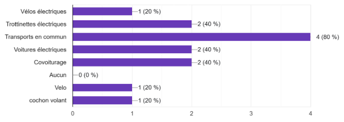
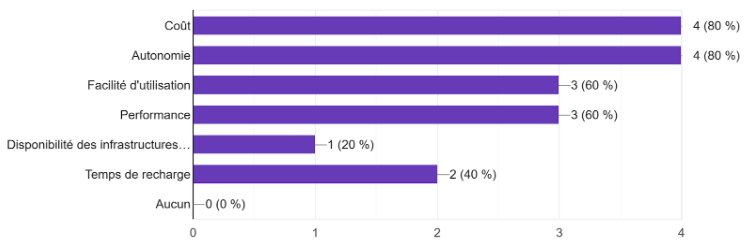
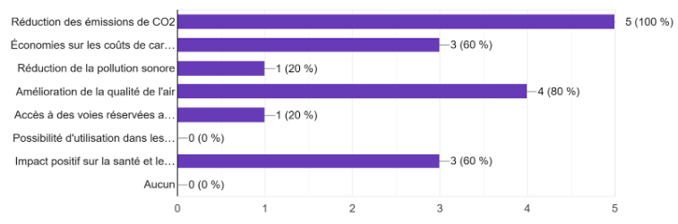

Êtes-vous intéressé par des solutions de financement pour l'achat d'un mode de transport plus écologique ?

Intérêt pour le financement d’un mode de transport écologique : La moitié des répondants (2 sur 5) se disent intéressés par des solutions de financement pour l’achat d’un mode de transport plus écologique.
Parmi les options suivantes, lesquelles vous intéressent le plus pour vos déplacements écologiques en ville ? (Sélectionnez toutes les options qui s'appliquent)

Parmi les options proposées, les plus plébiscitées sont les transports en commun (4 sur 5) et les vélos électriques (2 sur 5).
Quels sont les critères les plus importants pour vous lors du choix d'un mode de transport écologique ? (Choisissez les trois principaux)

Les critères les plus importants pour choisir un mode de transport écologique sont le coût, l’autonomie et la facilité d’utilisation (4 sur 5 chacun).
Quels avantages rechercheriez-vous dans un mode de transport écologique ? (Sélectionnez toutes les réponses qui s'appliquent)

Avantages recherchés dans un mode de transport écologique : Tous les répondants (5 sur 5) citent la réduction des émissions de CO2 comme un avantage recherché dans un mode de transport écologique. D’autres avantages mentionnés sont l’amélioration de la qualité de l’air, l’impact positif sur la santé et le bien-être, et les économies sur les coûts de carburant (3 sur 5 chacun).
Quels types d'informations aimeriez-vous obtenir concernant les solutions de financement pour un mode de transport écologique ? (Sélectionnez toutes les réponses qui s'appliquent)

Informations souhaitées concernant le financement d’un mode de transport écologique : Les informations les plus demandées concernant le financement d’un mode de transport écologique sont les conditions de remboursement (5 sur 5) et les avantages spécifiques pour les utilisateurs de modes de transport écologiques (4 sur 5). Une seule personne a exprimé un besoin spécifique, qui est une aide financière.
Grâce à nos recherches, nous avons remarqué que de nombreux employés se plaignaient des transports trop chers, et du parking trop petit. C'est pourquoi nous vous proposons plusieurs solutions non seulement économiques, mais aussi écologiques.